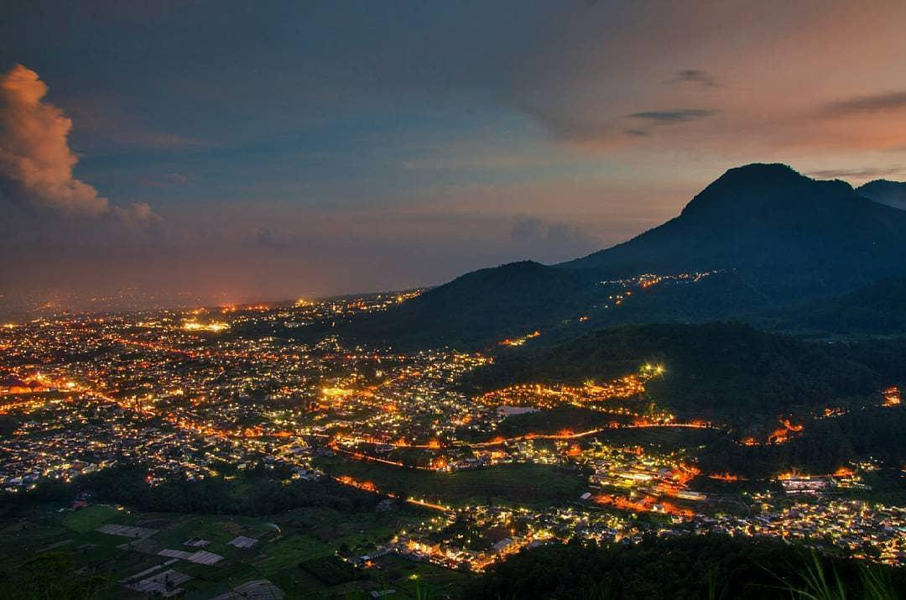

1. waduk selorejo
waduk selorejo malang – waktu liburan adalah waktu yang pas untuk berwisata bersama keluarga atau pun pasangan, nah waduk ini berada di daerah malang lebih tepatnya di kecamatan Ngantang sebelah barat kota malang, aksesnya pun sangat mudah kalian bisa akses menggunakan transportasi pribadi atau kendaraan umum, waduk ini juga memiliki pemandangan yang sangat indah , harga tiket masuknya tergolong sangat terjangkau mulai Rp3000 untuk motor dan Rp6000 untuk mobil, di sana juga memiliki fasilitas yang sangat mendukung beberapa fasilitasnya adalah area camp ground, lapangan golf, lapangan tenis, dan tentunya lahan parkir yang sangat luas, kalian tiak perlu kesusahan untuk membeli makanan dan minum karena di waduk selorejo terdapat warung-warung yang bisa kalian datangi, didalam waduk ini terdapat pulau yang bisa kalian datangi yaitu pulau jambu, nah untuk akses ke pulau jambu masyarakat sekitar sudah menyediakan perahu yang siap mengantarkan kalian, cukup dengan tarif Rp8000-10000 pulang-pergi untuk perahu mesin , untuk perahu dayung Rp3000-5000 pulang -pergi, setelah sampai di pulau jambu kalian bisa mendaki di bukit kecil, untuk tarif masuk dan makan jambu di pulau tersebut di kenakan Rp5000. pulau jambu ini sangat rimbun dan asri, gimana murahkan untuk bisa merasakan keindahan yang terdapat di waduk selorejo
2. paralayang
paralayang batu-malang – setelah waduk selorejo kita bergeser sedikit tetap di daerah malang juga, tempat wisata paralayang adalah tempat yang sangat hits di kalangan milenial, mengapa bisa sehits itu? karena di paralayang ini kita di suguhkan pemandangan yang sangat indah, di tempat ini kita bisa melihat kota batu dari atas bukit, akses untuk menuju tempat wisata ini sangat mudah dan jalan menuju tempat wisata ini menyuguhkan pemandangan yang sangat indah, di tempat ini kalian di suguhi berbagai spot foto yang sangat banyak, untuk biaya masuk tempat ini cukup terjangkau yaitu Rp15000, kalian yang ingin berkunjung di tempat ini tidak usah khawatir untuk makan dan minum karena di tempat ini banyak kios penjual makanan dan minuman, di paralayang juga ada beberapa tempat wisata juga yaitu taman langit, biaya untuk masuk ke taman langit juga sangat terjangkau yaitu Rp 10000 ketika kalian masuk taman langit kalian akan di suguhkan taman bunga-buang yang sangat indah dan banyak spot-spot foto yang bisa kalian upload di social media kalian lho guys. ada satu lagi tempat wisata yang ada di paralayang yaitu omah kayu, untuk biaya masuk wisata ini cukup terjangkau yaitu Rp 10000 kalian bisa berfoto-foto ria di tempat wisata yang satu ini dengan pemandangan yang sangat indah, gimana ingin berkunjung ke tempat ini saat liburan tiba.